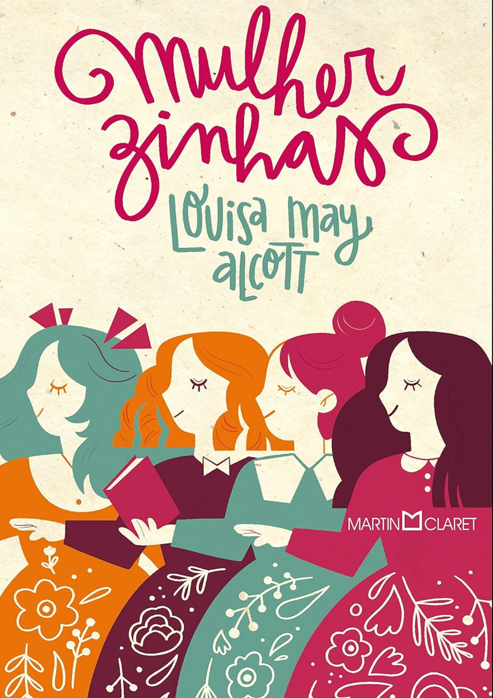
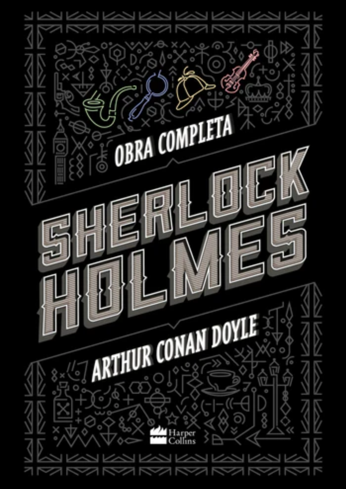
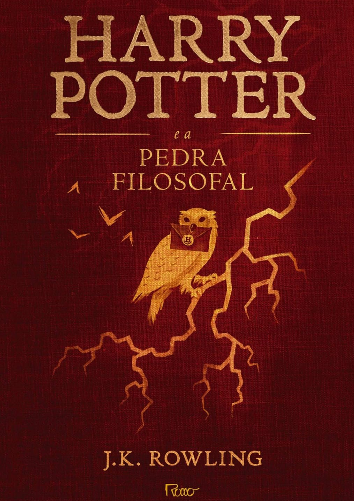
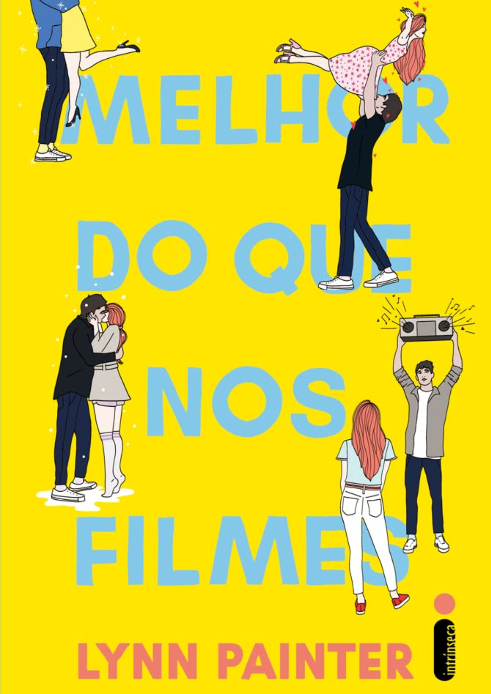

|  |
Ao usar como inspiração suas próprias experiências e as de sua família empobrecida da Nova Inglaterra do século XIX, Louisa May Alcott escreveu um livro que ressoa fortemente vida, espírito e afeto ― uma obra “simples e verdadeira”, em suas palavras. Assim, do primeiro Natal sem o pai, que luta na Guerra Civil pela União, até a vida adulta, acompanhamos o amadurecimento de Meg, Jo, Beth e Amy March e crescemos junto com suas conquistas, angústias, alegrias e desgostos. Publicado em 1868, Mulherzinhas foi pioneiro ao retratar meninas e jovens mulheres corajosas, cheias de vida e com ideias próprias. Com sensibilidade e graça, mostra a força que um ambiente familiar democrático, saudável e sem falsos moralismos exerce no diálogo e na defesa de valores até hoje fundamentais para a sociedade, como igualdade de gênero, liberdade de pensamento, dignidade e amor. |
|  |
Em 1887, o escritor escocês Ssir Arthur Conan Doyle criou Sherlock Holmes, o infalível detetive a quem os agentes da Scotland Yard recorriam para solucionar os mistérios mais intrigantes da Inglaterra vitoriana. Desde então, as aventuras do mestre da investigação atraem leitores ávidos por chegar à última página e ver o enigma desvendado.Para desvendar mistérios, o faro e a astúcia de Sherlock Holmes levam às fontes menos óbvias, às informações mais precisas. Um modelo que influencia até hoje a literatura policial e revela fôlego para impressionar gerações de leitores através dos tempos. |
 |
O destino do deserto está nas mãos de Amani Al’Hiza ― uma garota feita de fogo e pólvora, com o dedo sempre no gatilho. O deserto de Miraji é governado por mortais, mas criaturas míticas rondam as áreas mais selvagens e remotas, e há boatos de que, em algum lugar, os djinnis ainda praticam magia. De toda maneira, para os humanos o deserto é um lugar impiedoso, principalmente se você é pobre, órfão ou mulher. Amani Al’Hiza é as três coisas. Apesar de ser uma atiradora talentosa, dona de uma mira perfeita, ela não consegue escapar da Vila da Poeira, uma cidadezinha isolada que lhe oferece como futuro um casamento forçado e a vida submissa que virá depois dele. Para Amani, ir embora dali é mais do que um desejo ― é uma necessidade. Mas ela nunca imaginou que fugiria galopando num cavalo mágico com o exército do sultão na sua cola, nem que um forasteiro misterioso seria responsável por lhe revelar o deserto que ela achava que conhecia e uma força que ela nem imaginava possuir. |
|  |
Harry Potter é um garoto cujos pais, feiticeiros, foram assassinados por um poderosíssimo bruxo quando ele ainda era um bebê. Ele foi levado, então, para a casa dos tios que nada tinham a ver com o sobrenatural. Pelo contrário. Até os 10 anos, Harry foi uma espécie de gata borralheira: maltratado pelos tios, herdava roupas velhas do primo gorducho, tinha óculos remendados e era tratado como um estorvo. No dia de seu aniversário de 11 anos, entretanto, ele parece deslizar por um buraco sem fundo, como o de Alice no país das maravilhas, que o conduz a um mundo mágico. Descobre sua verdadeira história e seu destino: ser um aprendiz de feiticeiro até o dia em que terá que enfrentar a pior força do mal, o homem que assassinou seus pais. O menino de olhos verde, magricela e desengonçado, tão habituado à rejeição, descobre, também, que é um herói no universo dos magos. Potter fica sabendo que é a única pessoa a ter sobrevivido a um ataque do tal bruxo do mal e essa é a causa da marca em forma de raio que ele carrega na testa. Ele não é um garoto qualquer, ele sequer é um feiticeiro qualquer ele é Harry Potter, símbolo de poder, resistência e um líder natural entre os sobrenaturais. A fábula, recheada de fantasmas, paredes que falam, caldeirões, sapos, unicórnios, dragões e gigantes, não é, entretanto, apenas um passatempo. |
|  |
Elizabeth Buxbaum sempre soube que seu vizinho não seria um bom namorado. Apesar de todos acharem Wesley Bennett simpático e muito bonito, Liz tinha certeza de que, na verdade, ele era um chato de galochas. Mas Michael Young era diferente. O amor de infância de Liz estava à altura dos protagonistas das comédias românticas que ela tanto gostava, só que havia se mudado para longe quando os dois ainda eram crianças. Dez anos depois, ele estava de volta, mais lindo e charmoso do que nunca.Esbarrar com o garoto na escola foi como um sinal do universo. O último ano do ensino médio clamava por acontecimentos grandiosos, um baile inesquecível e momentos apaixonantes. Por isso, como uma boa romântica incurável, Liz estava determinada a fazer qualquer coisa para conquistar o verdadeiro amor. Até mesmo pedir ajuda ao vizinho irritante. O plano era infalível: fazer com que Michael notasse sua existência e a convidasse para o tão sonhado baile de formatura. Mas à medida que Wes e Liz se aproximam, ela vai questionar tudo o que sabe sobre o amor e descobrir que talvez seu “felizes para sempre” seja surpreendente ― e melhor do que ela poderia imaginar. |